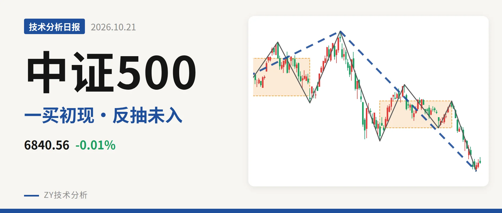
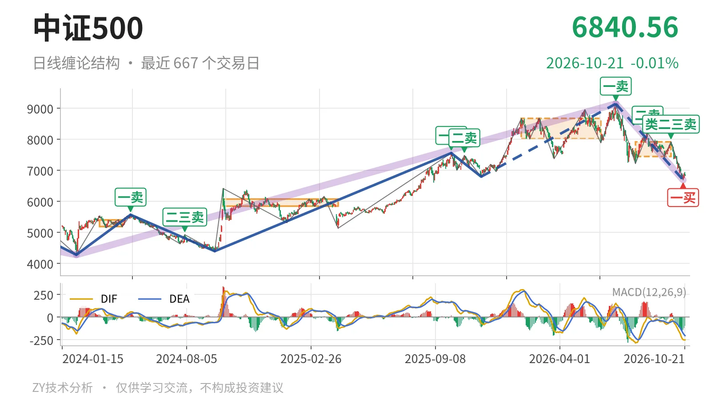
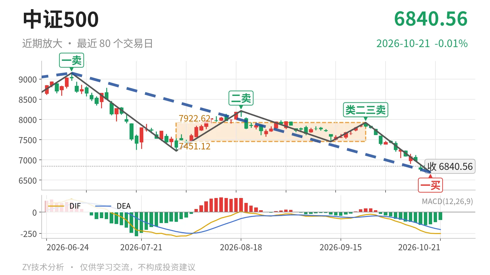

中证500｜一买后反抽未及7451点

最近日线中枢 7451.12—7922.62点，收盘位于中枢之下
一句话：日线下跌段没有结束，一买后反弹未成笔，7451点未收复
🌊 走势结构：下跌段未结束，内部一买初现
当前处在2026年7月1日以来的日线下跌段中，这段下跌还在延续。更大级别看，2024年2月5日以来的上涨段与2026年7月1日以来的下跌段都没有结束，当前属于上涨后的深幅回落。日线结构上，2026年7月1日至10月19日下跌已内含5笔，10月19日一买后仅2根K线反弹，未成笔，暂时只能看作下跌段内部修复。

🧭 中枢与位置：跌破最近中枢，中枢下移
最新价已跌破最近日线中枢，中枢明显下移。最新收盘6840.56点位于2026年7月30日至2026年9月22日日线笔中枢7451.12—7922.62点下方，距下沿约610点；该中枢中轴7686.87点，较2026年1月26日至2026年6月8日中枢8014.66—8671.35点由8343点一带降至7687点一线。2026年10月19日低点6692.83点与2016年1月27日至2017年9月12日线段中枢上沿6692.14点几乎重合，是更大级别结构位。
🎯 买卖点：卖点一个比一个低，一买出现
日线卖点一个比一个低，2026年10月19日一买出现。2026年7月1日一卖9147.56点之后，2026年8月18日二卖8211.31点、2026年9月22日类二三卖7922.62点逐级下移。2026年10月19日一买6692.83点所在下跌笔已经结束，其后反弹最高6941.51点，未成笔。当前没有创新低，这个一买仍是日线笔级别；若后续跌破6692点，则其只对应更小级别。

⚡ 背驰：终点新低，绿柱与DIF未同步
2026年9月22日至2026年10月19日下跌笔形成新低不新弱。与2026年7月1日至2026年7月30日下跌笔相比，终点由7222点下移至6692点，创出新低，但绿柱面积由2687缩小到1071，DIF低点由-285.2抬升到-248.9，构成背驰。这是2026年10月19日一买的基础。最新MACD的DIF为-251.7、DEA为-204.6，仍在零轴下，柱值-94.3，空头力量减弱但多头未接管。
🔎 关键位置观察：7451点与6692点定结构
7451点与6692点是当前结构分水岭。若从6692点开始的反弹回不到7451点上方，结构上构成三卖，2026年7月1日以来的下跌段延续。若重新站上7451点，则价格回到2026年7月30日至2026年9月22日中枢内，这波下跌更可能只是中枢扩展。若再跌破6692点，则2026年10月19日一买被破坏，下跌继续。当前反抽最高6941.51点，离7451点还差约510点，结构偏弱，弱在反弹未成笔、价格未回中枢下沿。
⚠️ 本文为基于公开行情数据的缠论技术结构记录，由程序自动计算并生成，仅供学习交流，不构成任何投资建议。市场有风险，投资需谨慎。